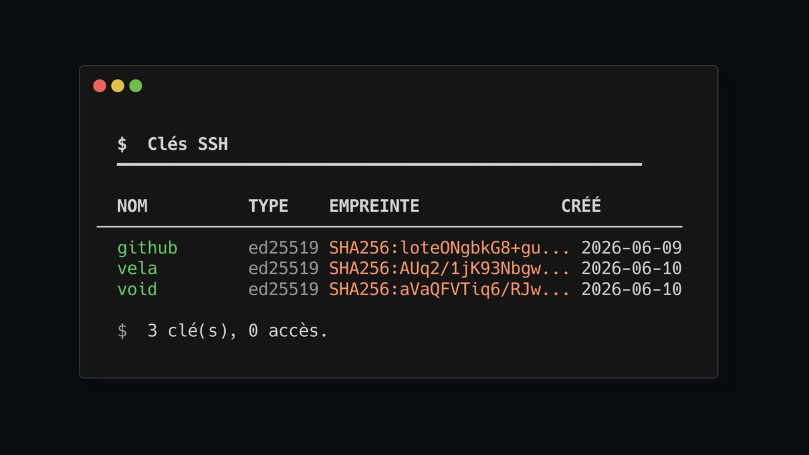
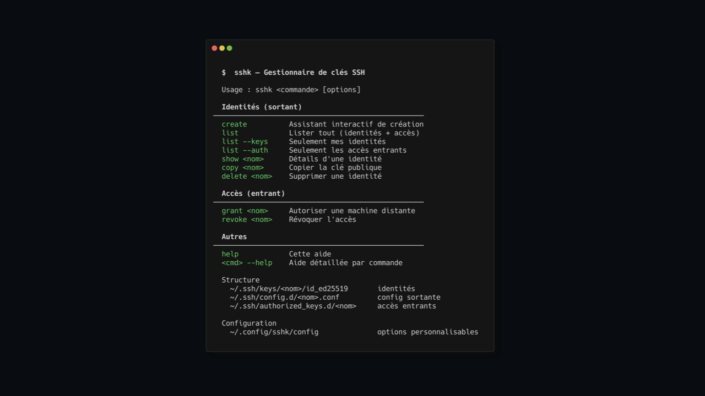
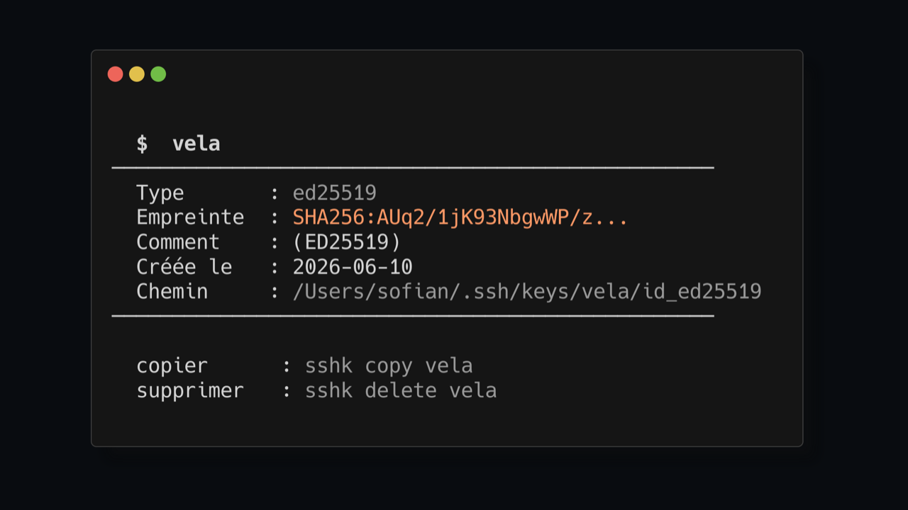

Structured SSH keys,
without the ~/.ssh mess.
Create, organize, grant, and revoke SSH keys with one predictable Bash CLI. Pure Bash + OpenSSH, and zero dependencies.

The messy landscape of untracked credentials.
When every SSH key sits flat in ~/.ssh, context disappears: id_rsa, id_ed25519, forgotten server keys, and no clear ownership trail.
sshk gives every identity a namespace. Each key gets its own directory, optional config snippet, and clear purpose.
One predictable tool.
Everything needed to configure credentials cleanly. Plain scripts, deterministic directory output.
Launches an interactive context-aware prompt to build a secure identity key pair without needing to remember manual SSH parameters.
Provides an immediate high-level overview of local private configurations alongside incoming authorized key associations at a single glance.
Inspects configuration assets. Outputs public signatures, full storage locations, config rules, and assigned SSH aliases.
Safely targets and streams your specific public key payload onto your clipboard with direct cross-platform clipboard tooling support.
Deploys and updates authorized signatures securely onto the desired destination remote instances to safely permit authentication.
Directly and programmatically drops targeted device entries from Remote host authorized lists, revoking host-level access paths.
Permanently removes the selected identity directory and its matching SSH config after explicit confirmation.

Know exactly what each identity does.
The sshk show command yields cryptographic fingerprints, explicit metadata comments, creation dates, configuration rules, and relative hosts cleanly aligned.

Minimal, non-intrusive setup.
Bootstrap local management immediately, then opt-in targets to accept managed configuration slices.
# Fetch the pure Bash script and execute locally curl -fsSL https://raw.githubusercontent.com/Sofian-bll/sshk/main/install.sh | bash # Create interactive setup sshk create # Verify environment status sshk list
# Create directory structure on target host mkdir -p ~/.ssh/authorized_keys.d chmod 700 ~/.ssh/authorized_keys.d # Configure OpenSSH to read authorized key fragments echo 'AuthorizedKeysFile .ssh/authorized_keys .ssh/authorized_keys.d/*' | sudo tee -a /etc/ssh/sshd_config # Reload server configuration safely sudo systemctl restart sshd